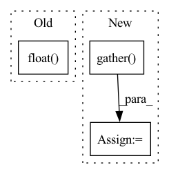

Pattern ID :21819
Before Change
// ////////////////////////////////////////////////////////////////////////////////////////////////////////////////////////////////////////////////
// ////////////////////////////////// length and scores of each candidate limbs ////////////////////////
// ////////////////////////////////////////////////////////////////////////////////////////////////////////////////////////////////////////////////
len_limbs = torch.clamp((kps_xys_f.float() - matched_kps_xys_t.float()
).norm(dim=-1, keepdim=True), min=self.min_len) // (N, L, K, 1)
// Is torch.exp(-min_dist / kps_scales_t) more sensible? --No, this leads 0.5 AP drop
limb_scores = kps_scores_f * matched_kps_score_t * torch.exp(-min_dist / len_limbs)After Change
// ////////////////////////////////////////////////////////////////////////////////////////////////////////////////////////////////////////////////
// ////////////////////////////////// jitter refinement ////////////////////////
// ////////////////////////////////////////////////////////////////////////////////////////////////////////////////////////////////////////////////
matched_kps_jitter_t = kps_jitter_t.gather( 2, min_ind.expand(
n, n_limbs, self.K, 2)) // (N, L, K, 2)
if self.use_jitter:
kps_xys_f += kps_jitter_f
matched_kps_xys_t += matched_kps_jitter_t
// limbs" shape=(N, L, K, 13), in which the last dim includes:
// [x1, y1, v1, x2, y2, v2, ind1, ind2, len_delta (min_dist), len_limb, limb_score, scale1, scale2]In pattern: SUPERPATTERN
Frequency: 3
Non-data size: 3
Instances Fragment ID: 69453127
Project Name: hellojialee/offsetguided
Commit Name: 48b0c3afa5c41fc799a277af12143a33ac959363
Time: 2020-12-25
Author: ustclijia@gmail.com
File Name: decoder/collect.py
M Class Name: LimbsCollect
N Class Name: LimbsCollect
M Method Name: generate_limbs(6)
N Method Name: generate_limbs(5)
M Parent Class: object
N Parent Class: object
M File Name: decoder/collect.py
N File Name: decoder/collect.py
M Start Line: 105
M End Line: 169
N Start Line: 64
N End Line: 208
Before Change
if c2.any():
alpha = -s[c2, lb2] / w[c2, indr[c2, lb2]]
c5 = u2[c2].float() < lb.unsqueeze(-1).float()
u3 = c5[u[:c5.shape[0]], indr_rev[c2]]
d[c2] = d[c2] * u3.float()
d[c2, indr[c2, lb2]] = alphaAfter Change
lb2 = lb.long()
if c2.any():
indr = indr[c2].gather( 1, lb2.unsqueeze(1)) .squeeze(1)
u = torch.arange(0, w.shape[0], device=device).unsqueeze(1)
u2 = torch.arange(0, w.shape[1], device=device, dtype=torch.float).unsqueeze(0)
alpha = -s[c2, lb2] / w[c2, indr] Fragment ID: 69453131
Project Name: jeromerony/adversarial-library
Commit Name: 1f51f51770105e045bf985ab7553d5480efc4dbe
Time: 2020-11-26
Author: jerome.rony@gmail.com
File Name: adv_lib/attacks/fast_adaptive_boundary/projections.py
M Class Name: AnonimousClass
N Class Name: AnonimousClass
M Method Name: projection_l1(3)
N Method Name: projection_l1(3)
M Parent Class:
N Parent Class:
M File Name: adv_lib/attacks/fast_adaptive_boundary/projections.py
N File Name: adv_lib/attacks/fast_adaptive_boundary/projections.py
M Start Line: 235
M End Line: 273
N Start Line: 235
N End Line: 274
Before Change
self.knn_t,
)
num = images.size()
top1 = (pred_labels[:, 0] == targets).float() .sum()
return (num, top1)
def validation_epoch_end(self, outputs):After Change
)
if dist.is_initialized() and dist.get_world_size() > 0:
// gather predictions and targets from all processes
predicted_labels = torch.cat(dist.gather( predicted_labels) , 0)
targets = torch.cat(dist.gather(targets), 0)
self._val_predicted_labels.append(predicted_labels.cpu()) Fragment ID: 69453134
Project Name: lightly-ai/lightly
Commit Name: 000ebaa81361959c8cf9e4075f5c3e393df41a93
Time: 2023-04-12
Author: 43336610+guarin@users.noreply.github.com
File Name: lightly/utils/benchmarking.py
M Class Name: BenchmarkModule
N Class Name: BenchmarkModule
M Method Name: validation_step(3)
N Method Name: validation_step(3)
M Parent Class: LightningModule
N Parent Class: LightningModule
M File Name: lightly/utils/benchmarking.py
N File Name: lightly/utils/benchmarking.py
M Start Line: 197
M End Line: 211
N Start Line: 203
N End Line: 221